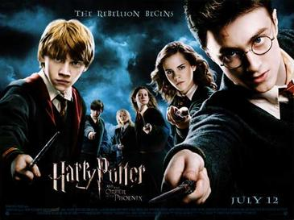
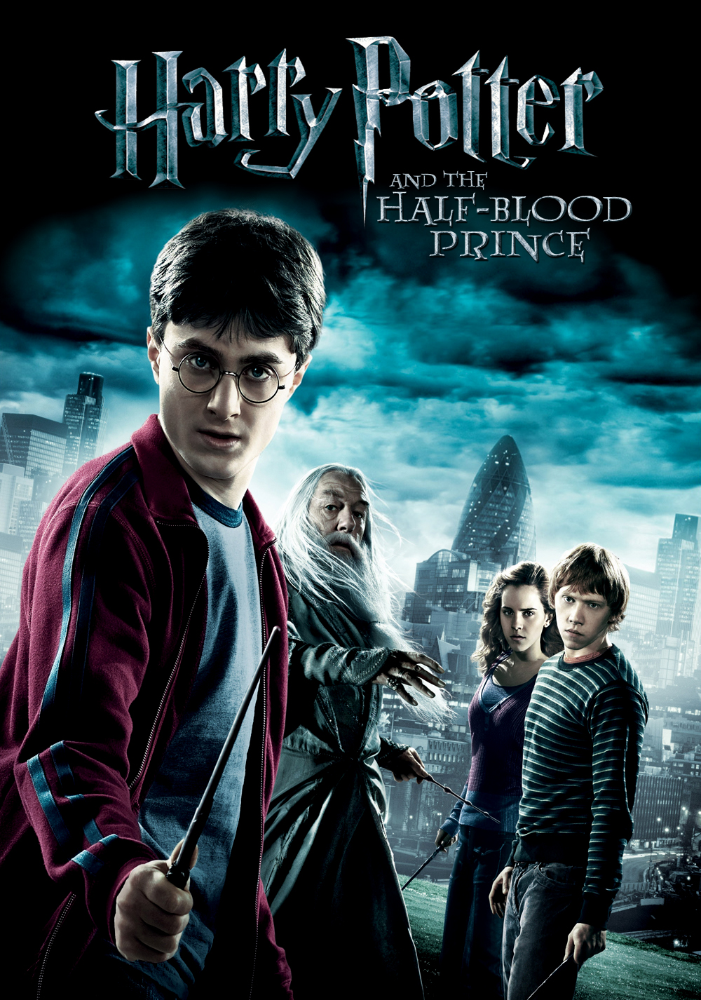

Hogwarts School of Witchcraft and Wizardry was founded by four of the most brilliant witches and wizards of their time. It was founded in the 10th century by Godric Gryffindor, Rowena Ravenclaw, Helga Hufflepuff and Salazar Slytherin. Each of them created a house in their names and thus established one of the best schools in the wizarding world. Many of the individuals in each house have similar traits or qualities as the original founders. Young witches and wizards receive their letters to Hogwarts at the mere age of 11 years old. Before beginning their schooling , each student must first be sorted into their correct houses by the magical Sorting Hat.
 |
 |
| Harry Potter and the Philosopher's Stone (2001) |
Harry Potter and the Chamber of Secrets |
| Harry Potter is an orphaned boy brought up by his unkind Muggle (non-magical) aunt and uncle. At the age of eleven, half-giant Rubeus Hagrid informs him that he is actually a wizard and that his parents were murdered by an evil wizard named Lord Voldemort. Voldemort also attempted to kill one-year-old Harry on the same night, but his killing curse mysteriously rebounded and reduced him to a weak and helpless form. Harry became extremely famous in the Wizarding World as a result. Harry begins his first year at Hogwarts School of Witchcraft and Wizardry and learns about magic. During the year, Harry and his friends Ron Weasley and Hermione Granger become entangled in the mystery of the Philosopher's Stone which is being kept within the school. |
Harry, Ron, and Hermione return to Hogwarts for their second year, which proves to be more challenging than the last. The Chamber of Secrets has been opened, leaving students and ghosts petrified by an unleashed monster. Harry must face up to claims that he is the heir of Salazar Slytherin (founder of the Chamber), learn that he can speak Parseltongue, and also discover the properties of a mysterious diary, only to find himself trapped within the Chamber of Secrets itself. |
 |
 |
| Harry Potter and the Prisoner of Azkaban |
Harry Potter and the Goblet of Fire (2005) |
| Harry Potter's third year sees the boy wizard, along with his friends, attending Hogwarts School once again. Professor R. J. Lupin joins the staff as Defence Against the Dark Arts teacher, while convicted murderer Sirius Black escapes from Azkaban Prison. The Ministry of Magic entrusts the Dementors of Azkaban to guard Hogwarts from Black. Harry learns more about his past and his connection with the escaped prisoner. |
During Harry's fourth year, Hogwarts plays host to a legendary event: the Triwizard Tournament. Three European schools participate in the tournament, with three 'champions' representing each school in the deadly tasks. The Goblet of Fire chooses Fleur Delacour, Viktor Krum, and Cedric Diggory to compete against each other. However, curiously, Harry's name is also produced from the Goblet thus making him a fourth champion, which results in a terrifying encounter with a reborn Lord Voldemort. |
|  |
 |
Harry Potter and the Order of the Phoenix (2007) |
Harry Potter and the Half-Blood Prince (2009) |
| Harry's fifth year begins with him being attacked by Dementors in Little Whinging. Later, he finds out that the Ministry of Magic is in denial of Lord Voldemort's return. Harry is also beset by disturbing and realistic nightmares, while Professor Umbridge, a representative of Minister for Magic Cornelius Fudge, is the new Defence Against the Dark Arts teacher. Harry becomes aware that Voldemort is after a prophecy which reveals: "neither can live while the other survives." The rebellion involving the students of Hogwarts, secret organisation Order of the Phoenix, the Ministry of Magic, and the Death Eaters begins.
|
In Harry's sixth year at Hogwarts, Lord Voldemort and his Death Eaters are increasing their terror upon the Wizarding and Muggle worlds. Headmaster Albus Dumbledore persuades his old friend Horace Slughorn to return to Hogwarts as a professor as there is a vacancy to fill. There is a more important reason, however, for Slughorn's return. While in a Potions lesson, Harry takes possession of a strangely annotated school textbook, inscribed 'This is the property of the Half-Blood Prince'. Draco Malfoy struggles to carry out a mission presented to him by Voldemort. Meanwhile, Dumbledore and Harry secretly work together to discover the method on how to destroy the Dark Lord once and for all. |
 |
 |
Harry Potter and the Deathly Hallows- Part 1 (2010) |
Harry Potter and the Deathly Hallows-Part 2 (2011)
|
|
After unexpected events at the end of the previous year, Harry, Ron, and Hermione are entrusted with a quest to find and destroy Lord Voldemort's secret to immortality - the Horcruxes. It is supposed to be their final year at Hogwarts, but the collapse of the Ministry of Magic and Voldemort's rise to power prevents them from attending. The trio undergo a long journey with many obstacles in their path including Death Eaters, Snatchers, the mysterious Deathly Hallows, and Harry's connection with the Dark Lord's mind becoming ever stronger. |
After destroying one Horcrux and discovering the significance of the three Deathly Hallows, Harry, Ron and Hermione continue to seek the other Horcruxes in an attempt to destroy Voldemort, who has now obtained the powerful Elder Wand. The Dark Lord discovers Harry's hunt for Horcruxes and launches an attack on Hogwarts School, where the trio return for one last stand against the dark forces that threaten both the Wizarding and Muggle worlds
|